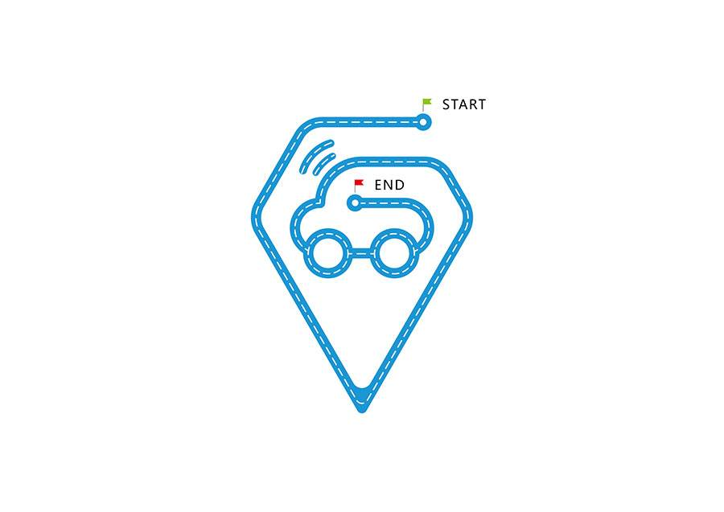

德玛西亚
关于你们团队的介绍。
可以给我们解释一下团队名称的来历，或是分别介绍你们的团队成员。
(以下为示例)
百度Web前端技术学院(Baidu Institude of Front-End Technology简称IFE)是一个有百度人力资源部校园招聘组、百度EFE团队联合出品的、面向在校大学生以及对前端技术有兴趣的前端在线学校平台，我们希望能够借助百度大量优秀的前端工程师以及丰富的前端只是积累，帮助人们更加有趣、高效、系统地学习Web前端技术。
2016春季班概述
一年之计在于春，经过漫长的冬季，又是开学之际，众多莘莘学子纷纷又回到校园，投入学习之中。百度前端技术学院也在此时为大家带来了一道前端学习的饕餮盛宴。经过2年多的尝试与摸索，我们确认了实践、交流与分享，对于技术学习而言，是非常有效且高效的手段，因此，本次春季班，我们特别搭建了一个线上平台系统，通过这个系统想学员们发送编码任务，学员们在这个系统上提交作业地址，进行相互的代码评审（Code Review）与评价，同时在平台中积累自己的学习总结笔记并分享给大家。为了让大家更加有动力进行这些学习方式，我们在整个春季班的学习过程中，融入了竞赛模式，任务完成得好的，评价仔细认真的，笔记写得对他人有帮助的，我们都会通过一套积分系统来进行排名。在头一个半月的任务“闯关”之后，我们还特意安排了一个很有挑战性，能够发挥大家创新能力的大任务环节，具体任务当然暂时保密。这个终极BOSS的挑战会作为整个春季班的最终环节。
个人logo80X80
个人logo80X80
个人logo80X80
个人logo80X80